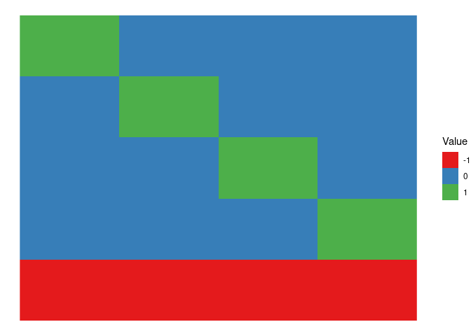
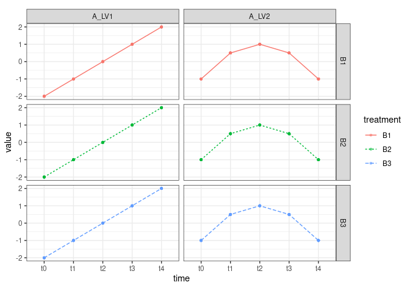
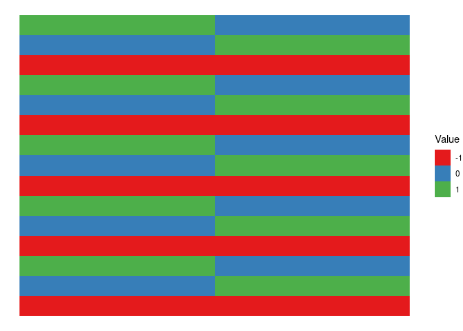
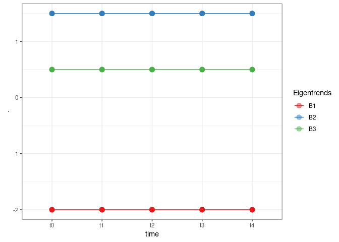
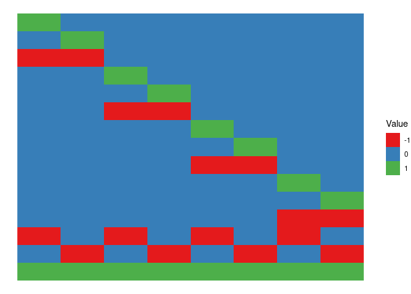
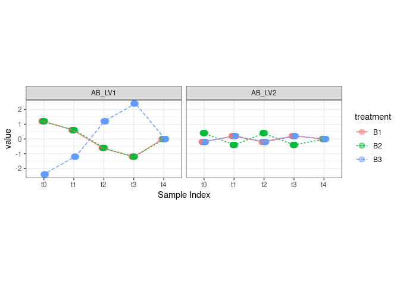
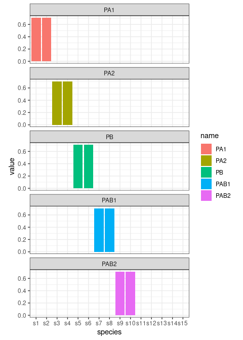
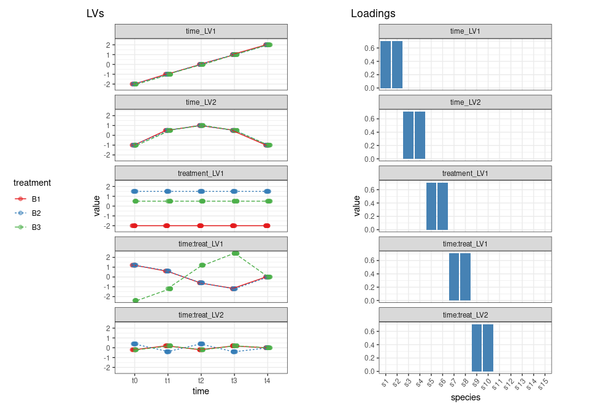

synthetic_dataset.RmdThe objective of this document is to show how the synthetic dataset
included in the gASCA package was created. In this
simulation, 15 count variables are obtained as a function of 3 different
treatments at 5 points in time. These variables could represent, for
instance, count data from 10 different invertebrate species found on
plants at Time (A) 0, 1, 2, 3, 4 after the plants have been treated with
one of three treatments (B1, B2, B3). For each combination of time and
treatment, K = 10 replicates (k = 1…K) were simulated considering the
model:
Y = g−1(H0+HA+HB+HAB) + EPois
This is further decomposed in term-specific latent variables. A set of loadings is then used to associate each latent variable to a group of the measured variables:
Y = g−1(H0+TAPAT+TBPBT+TABPABT) + E*Poi**s*
In particular.
ntime <- 5 # no of timepoints
ntreat <- 3 # no of treatments
nrepl <- 10 # no of replicates
## number of samples
nSamp = ntime * ntreat * nrepl
## The design a matrix for the first factor is the following
contrA <- contr.sum(ntime)
contrA## [,1] [,2] [,3] [,4]
## 1 1 0 0 0
## 2 0 1 0 0
## 3 0 0 1 0
## 4 0 0 0 1
## 5 -1 -1 -1 -1For each time point we have to allocate three treatments and 10 replicates
## since we have to allocate for each time point three treatment levels and
## three replicates
XA <- contrA %x% rep(1,ntreat)
XA <- XA %x% rep(1,nrepl)Let’s now plot the matrix
XA %>%
melt() %>%
ggplot() +
geom_raster(aes(x = Var2, y = -Var1, fill = factor(value))) +
scale_fill_brewer(palette = "Set1", name = "Value") +
theme_void()
The previous design matrix is used on the two time eigentrends, which will be now organized in a matrix. Remember that since we use sum coding for the contrasts we need only four level for the 5 timepoints:
The final score matrices are obtained combining WA and XA
TA <- XA %*% WALet’s visualize the profile of the two eigentrends
TA %>%
data.frame() %>%
add_column(time = rep(c("t0","t1","t2","t3","t4"), each = 30)) %>%
add_column(treatment = rep(rep(c("B1","B2","B3"), each = 10), times = 5)) %>%
pivot_longer(contains("LV")) %>%
ggplot() +
geom_point(aes(x = time, y = value, col = treatment), alpha = 0.5, size = 1) +
geom_line(aes(x = time, y = value, col = treatment, lty = treatment, group = treatment)) +
facet_grid(treatment~name) +
theme_bw() +
theme(aspect.ratio = 0.5)
As before we start from the design matrix with sum contrasts and 3 levels (B1,B2,B3)
contrB <- contr.sum(ntreat)
## we then have n time points and the replicates
XB <- rep(1,ntime) %x% contrB
XB = XB %x% rep(1,nrepl)
XB %>%
melt() %>%
ggplot() +
geom_raster(aes(x = Var2, y = -Var1, fill = factor(value))) +
scale_fill_brewer(palette = "Set1", name = "Value") +
theme_void()
Now we define the effect of the treatment which has only one LV
## this is the effect of the treatment, only one component
WB <- c(-2, 1.5)As before we “populate” the design matrix with the treatment levels
TB <- XB %*% WBAnd we plot the results
TB %>%
data.frame() %>%
add_column(time = rep(c("t0","t1","t2","t3","t4"), each = 30)) %>%
add_column(treatment = rep(rep(c("B1","B2","B3"), each = 10), times = 5)) %>%
ggplot() +
geom_point(aes(x = time, y = ., col = treatment), alpha = 0.5, size = 3) +
geom_line(aes(x = time, y = ., col = treatment, group = treatment)) +
scale_color_brewer(palette = "Set1", name = "Eigentrends") +
theme_bw()
The design matrix of the interaction term is obtained by a combination of XA and XB, each sample will be assigned to a combination of the levels of A and of B
## now we have the interaction term
XAB <- cbind(XA[,1]*XB[,1],
XA[,1]*XB[,2],
XA[,2]*XB[,1],
XA[,2]*XB[,2],
XA[,3]*XB[,1],
XA[,3]*XB[,2],
XA[,4]*XB[,1],
XA[,4]*XB[,2])and this is the plot
XAB %>%
melt() %>%
ggplot() +
geom_raster(aes(x = Var2, y = -Var1, fill = factor(value))) +
scale_fill_brewer(palette = "Set1", name = "Value") +
theme_void()
## these are the impact of the interaction on the two components
AB_LV1 <- 3*c(0.4, 0.4, 0.2, 0.2, -0.2, -0.2, -0.4, -0.4)
AB_LV2 <- c(-0.2,0.4, 0.2, -0.4, -0.2, 0.4, 0.2, -0.4)
WAB <- cbind(AB_LV1, AB_LV2)
TAB <- XAB%*%WAB
TAB %>%
data.frame() %>%
add_column(time = rep(c("t0","t1","t2","t3","t4"), each = 30)) %>%
add_column(treatment = rep(rep(c("B1","B2","B3"), each = 10), times = 5)) %>%
pivot_longer(contains("LV")) %>%
ggplot() +
#geom_point(aes(x = time, y = value, col = treatment), alpha = 0.5, size = 3) +
geom_point(aes(x = time, y = value, col = treatment), alpha = 0.5, size = 3,
position=position_jitterdodge(dodge.width = 0.1, jitter.width = 0.1)) +
geom_line(aes(x = time, y = value, col = treatment, lty = treatment, group = treatment),
position=position_jitterdodge(dodge.width = 0.1, jitter.width = 0.1) ) +
facet_wrap(~name) +
scale_fill_brewer(palette = "Set1", name = "Eigentrends") +
xlab("Sample Index") +
theme_bw() +
theme(aspect.ratio = 0.5)
According to the initial plan, LV1 reflects a temporal change in the difference between treatment B3 and the other treatments; LV2, instead, reflects a difference between B2 and the other two treatments which changes with time.
Now we will use a set of loadings to associate the LV of each term to the 10 measured species. The loadings will be also normalized to 1. As discussed before, we also add 5 species which are not responding to the design.
## here we use "dummy loadings" to move from the LVs to the 15 "measured" variables
## LV1 of the time factor goes on the first two species
PA1 <- c(1, 1, 0, 0, 0, 0, 0, 0, 0, 0, 0, 0, 0, 0, 0)
PA1 <- PA1/sqrt(sum(PA1%*%PA1)) ## normalize
## LV2 of the time factor goes on s3 and s4
PA2 <- c(0, 0, 1, 1, 0, 0, 0, 0, 0, 0, 0, 0, 0, 0, 0)
PA2 <- PA2/sqrt(sum(PA2^2))
## here the loadings matrix for time
PA <- cbind(PA1, PA2)
## LV1 for the treatment factor goes to
PB <- c(0, 0, 0, 0, 1, 1, 0, 0, 0, 0, 0, 0, 0, 0, 0)
PB <- PB/sqrt(sum(PB^2))
## LV1 for the interaction goes to variables s7, s8
PAB1 <- c(0, 0, 0, 0, 0, 0, 1, 1, 0, 0, 0, 0, 0, 0, 0)
PAB1 <- PAB1/sqrt(sum(PAB1^2))
## LV2 for the interaction goes to variables s9, s10
PAB2 <- c(0, 0, 0, 0, 0, 0, 0, 0, 1, 1, 0, 0, 0, 0, 0)
PAB2 <- PAB2/sqrt(sum(PAB2^2))
PAB <- cbind(PAB1, PAB2)Let’s plot the loadings
cbind.data.frame(PA,PB,PAB) %>%
add_column(species = paste0("s",1:15)) %>%
mutate(species = factor(species, levels = unique(species))) %>%
pivot_longer(starts_with("p")) %>%
mutate(name = factor(name, levels = c("PA1","PA2","PB","PAB1","PAB2"))) %>%
ggplot() +
geom_col(aes(x = species, y = value, fill = name)) +
facet_wrap(~name, ncol = 1) +
theme_bw() +
theme(aspect.ratio = 0.3)
Now we create the matrices containing the expected values (remember that we are working on the linear predictor space)
To reduce the number of zeroes we create a matrix with the grand mean for the different species.
## Finally we need the grand mean
mu <- rep(1, ntreat*ntime*nrepl) %*% t(c(2, 3, 4, 5, 6, 6, 5, 4, 3, 2, 6, 5, 8, 5, 3))Now we combine everything, back transform values in the “count” space and add poisson noise.
## we add everything up and make the inverse link
logy <- mu + A + B + AB
y <- exp(logy)
ycount <- apply(y,2, function(c) rpois(n = length(c), lambda = c))To finish with the synthetic dataset we need to prepare the dataframe with the design.
d <- data.frame(time = rep(c("t0","t1","t2","t3","t4"), each = 30),
treatment = rep(rep(c("B1","B2","B3"), each = 10), times = 5))
colnames(ycount) <- paste0("s",1:15)
synth_count_data <- list(counts = ycount, design = d)Save the data in the package folder.
save(synth_count_data, file = "../../data/synth_count_data.RData", version = 2)We finally use patchwork to produce the figures for the
paper.
figure_1a <- cbind.data.frame(PA,PB,PAB) %>%
add_column(species = paste0("s",1:15)) %>%
mutate(species = factor(species, levels = unique(species))) %>%
pivot_longer(starts_with("p")) %>%
mutate(name = factor(name, levels = c("PA1","PA2","PB","PAB1","PAB2"),
labels = c("time_LV1", "time_LV2", "treatment_LV1",
"time:treat_LV1","time:treat_LV2" ))) %>%
ggplot() +
geom_col(aes(x = species, y = value), fill = "steelblue") +
facet_wrap(~name, ncol = 1) +
ggtitle("Loadings") +
theme_bw() +
theme(aspect.ratio = 0.3,
legend.position = "none",
axis.text.x = element_text(angle = 45, vjust = 1, hjust=1))
figure_1b <- cbind.data.frame(TA,B_LV1 = TB,TAB) %>%
add_column(time = rep(c("t0","t1","t2","t3","t4"), each = 30)) %>%
add_column(treatment = rep(rep(c("B1","B2","B3"), each = 10), times = 5)) %>%
pivot_longer(contains("LV")) %>%
mutate(name = factor(name, levels = c("A_LV1","A_LV2","B_LV1","AB_LV1","AB_LV2"),
labels = c("time_LV1", "time_LV2", "treatment_LV1",
"time:treat_LV1","time:treat_LV2" ))) %>%
ggplot() +
geom_point(aes(x = time, y = value, col = treatment),
position=position_jitterdodge(dodge.width = 0.1, jitter.width = 0.1), alpha = 0.5, size = 2) +
geom_line(aes(x = time, y = value, col = treatment, group = treatment, lty = treatment),
position=position_jitterdodge(dodge.width = 0.1, jitter.width = 0.1)) +
facet_wrap(~name, ncol = 1) +
scale_color_brewer(palette = "Set1") +
ggtitle("LVs") +
theme_bw() +
theme(aspect.ratio = 0.3,
legend.position = "left")Join the figure with patchwork
figure_1b | figure_1a